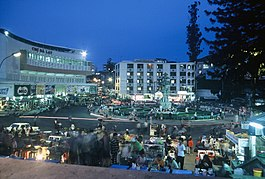
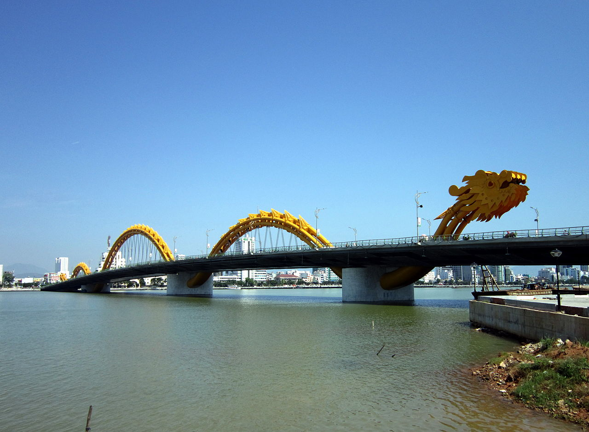
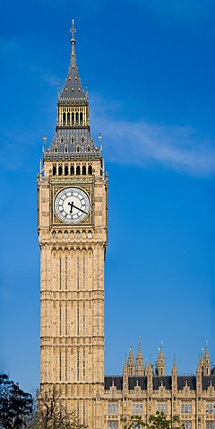

Da Lat's specific sights are pine wood (forming the name: "City of thousands of pine trees") with twisting roads and tree marigold (Vietnamese: dã quỳ) blossom in the winter. The city’s temperate weather stands in contrast to Vietnam's otherwise tropical climate. Mist covering the valleys almost year-round leads to its name "City of Eternal Spring".
Da Nang (Vietnamese: Đà Nẵng, [ɗâː nǎˀŋ] (About this sound listen)) is the fifth largest city in Vietnam after Ho Chi Minh City (Saigon) , Hanoi , Can Tho and Haiphong in terms of urbanization and economy.[3] Located on the coast of the South China Sea at the mouth of the Han River, it is one of Vietnam's most important port cities. As one of the country's five direct-controlled municipalities, it is under the direct administration of the central government.
London is one of the leading global cities[18][19] in the arts, commerce, education, entertainment, fashion, finance, healthcare, media, professional services, research and development, tourism and transportation.[20][21][22] It is the world's largest financial centre[23][24][25][26] and has the fifth or sixth largest metropolitan area GDP in the world.[note 3][27][28] London is often regarded as a world cultural capital.[29][30][31] It is the world's most-visited city as measured by international arrivals[32] and has the world's largest city airport system measured by passenger traffic.[33] It is the world's leading investment destination,[34][35][36][37] hosting more international retailers[38][39] and ultra high-net-worth individuals[40][41] than any other city. London's universities form the largest concentration of higher education institutes in Europe.[42] In 2012, London became the first city to have hosted the modern Summer Olympic Games three times.
